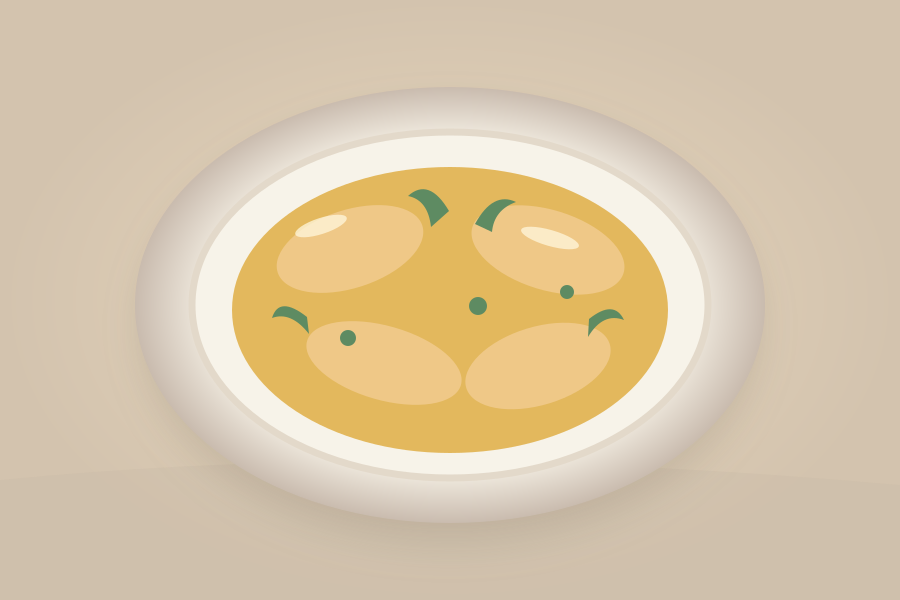
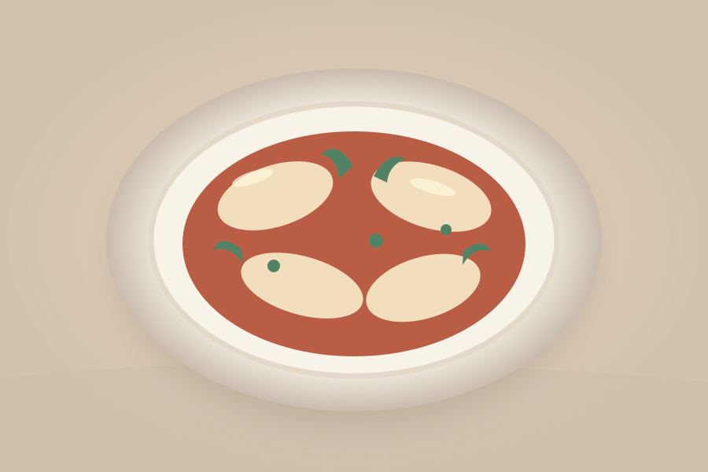
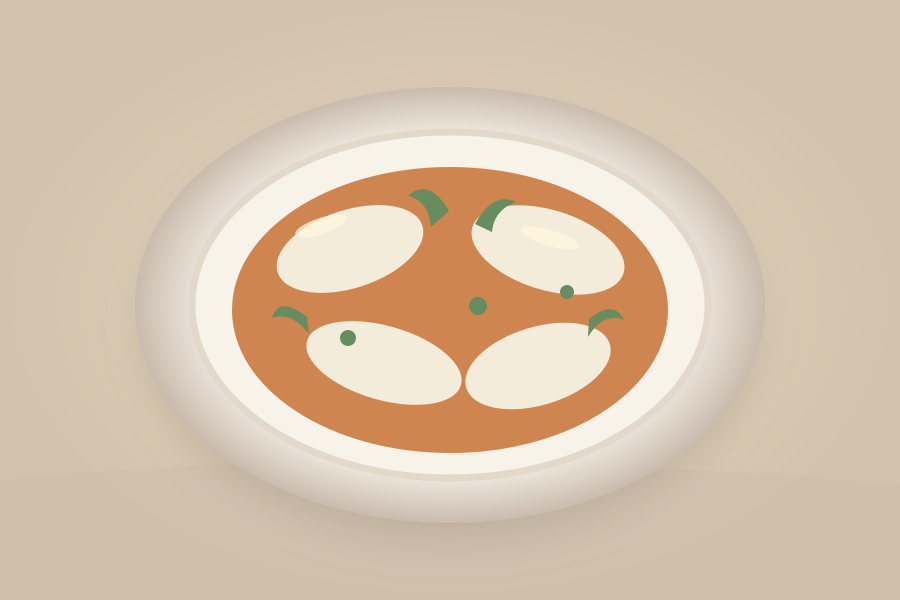

A TASTE OF HỘI AN
Cơm gà
Hội An
Golden rice, tender chicken, and a handful of fresh herbs.
See the recipeFOOD & EVERYDAY COOKING
A few familiar meals for the days
you cook at home.

A TASTE OF HỘI AN
Golden rice, tender chicken, and a handful of fresh herbs.
See the recipe
